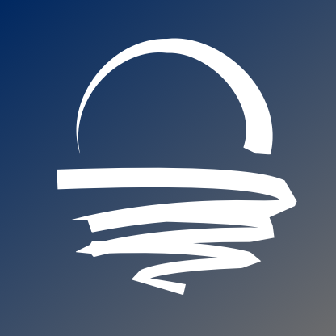

projects

Dawn (v1)
Database Search Engine
Debrief (v2)
Daily News Reports
Foci
Music Curation Using Muse

Chromapulse
Music Loop Generator

Haven (Beta)
Project Manager

Tundra (Beta)
Programming Notes
Database Search Engine
Daily News Reports
Music Curation Using Muse
Music Loop Generator
Project Manager
Programming Notes
"The clouds cry, the gusts scream"

"Nothing stoppin' us from being up next"

"All my worries are washed away"
"Just to reach our home... find our home"

Ed Sheeran - Perfect
Niall Horan - Slow Hands

Concept
Potential Startup
Mission Patch
Aerospace Startup

Potential Startup